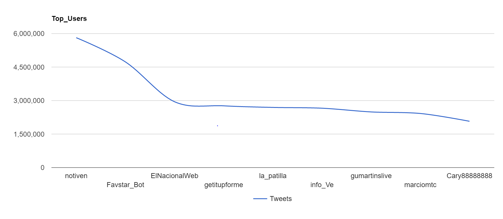
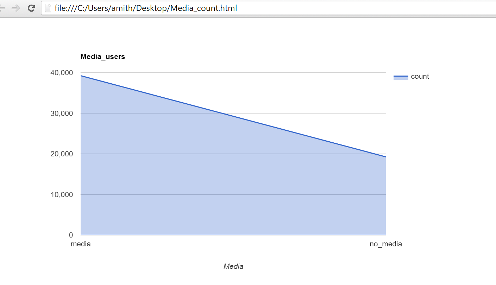
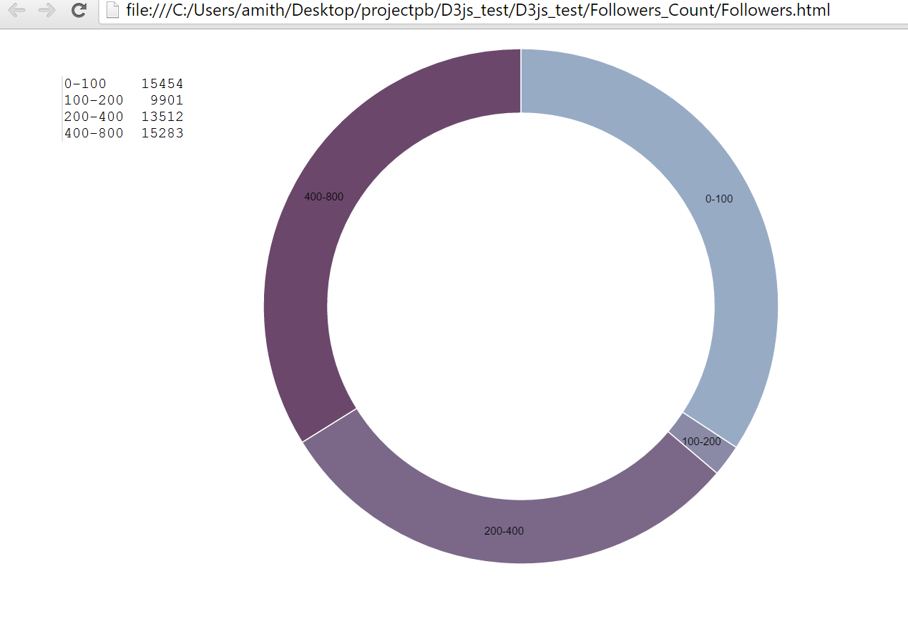
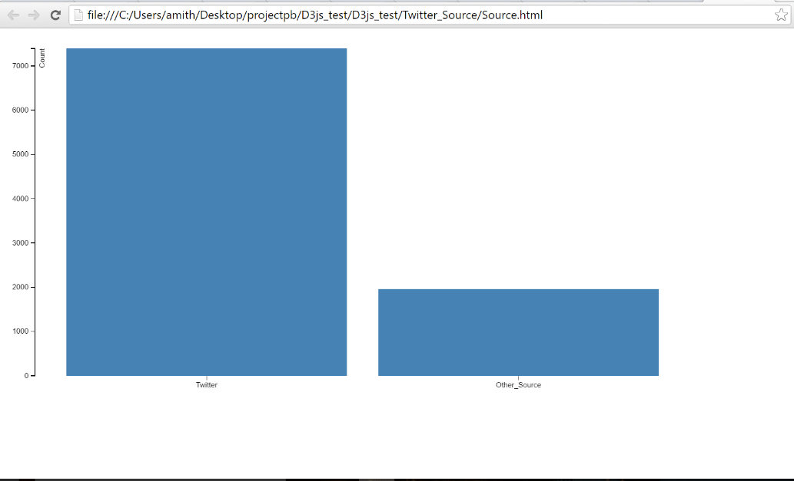
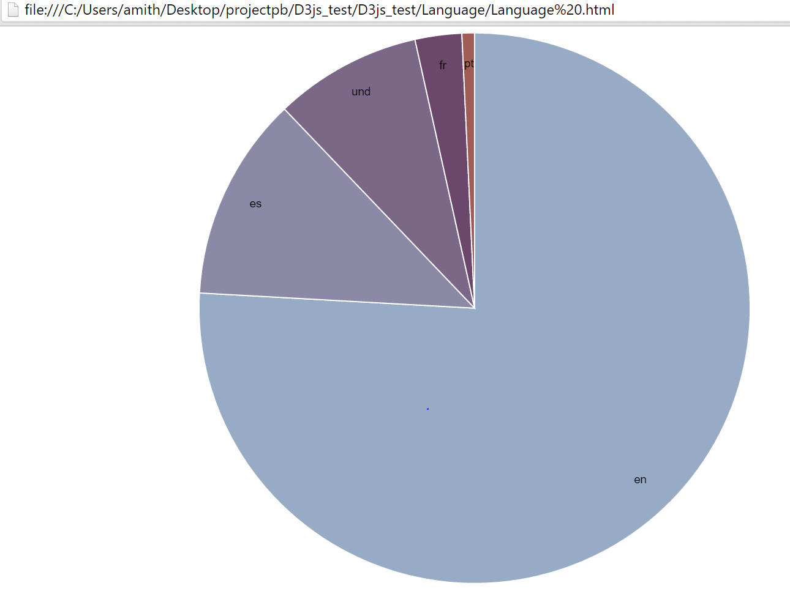
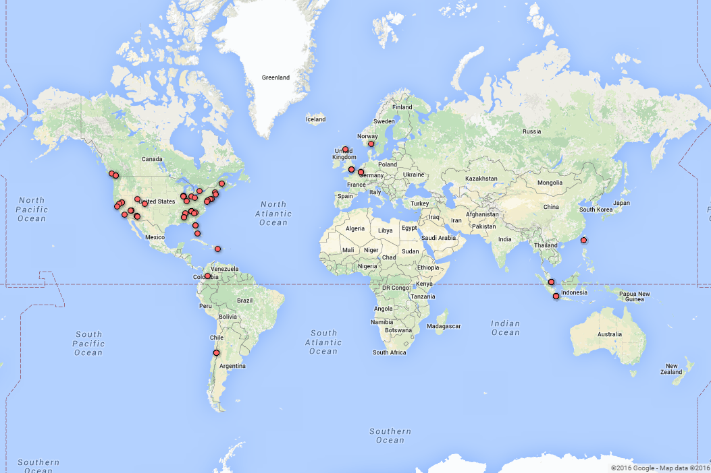
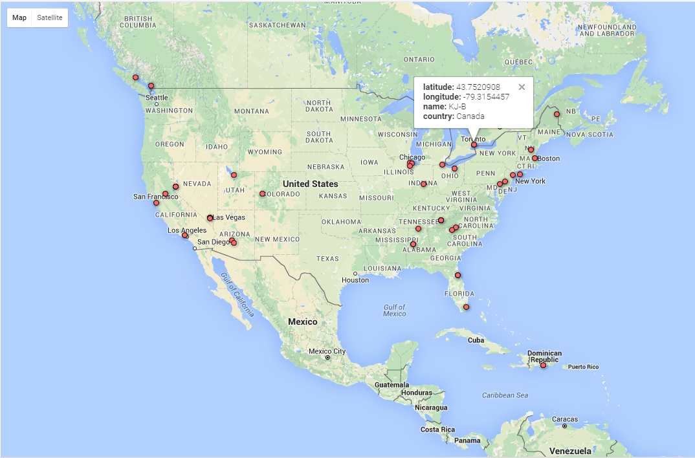
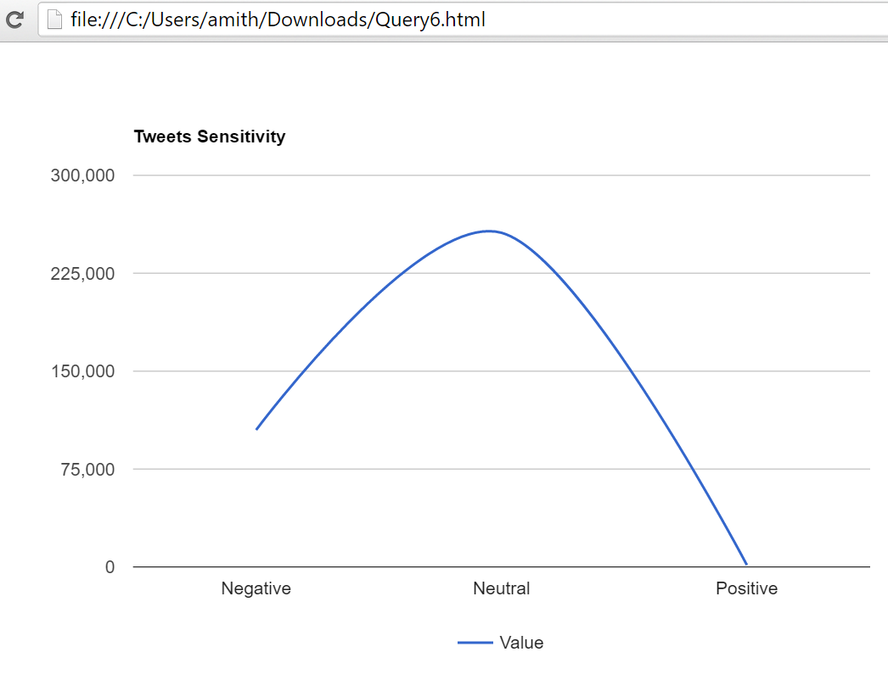

The visualizations given below are the results of analytical queries run on Twitter data using Apache Spark
The tweets are collected using hashtag "Trump"
Top 9 Users
This graph is to show the users with most number of tweets in their profile history.
Analysis of Media
This graph is to analyse the number of tweets which had any kind of media in them
Analysis on HashTags
This graph is to point the Top hashtags used by the users to tweet about TRUMP.

Follower Analysis
This graph is to distinguish the number of followers of people.
Analysis on Source
This graph is to find out how many tweets have www.twitter.com as their source
Analysis on languages
This graph is to find out the top languages used to tweet.
Analysis on locations
This graph is to show the tweets analysis using location i.e. number of tweets that originated from U.S.A. and other parts of the World .This was done using Google Fusion .
 Analysis on sensitivity
This graph is to show the users profile sensitivity.
